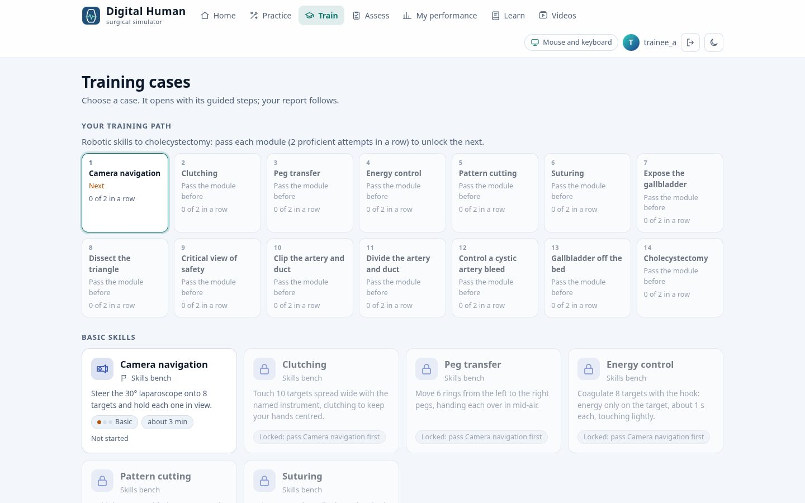
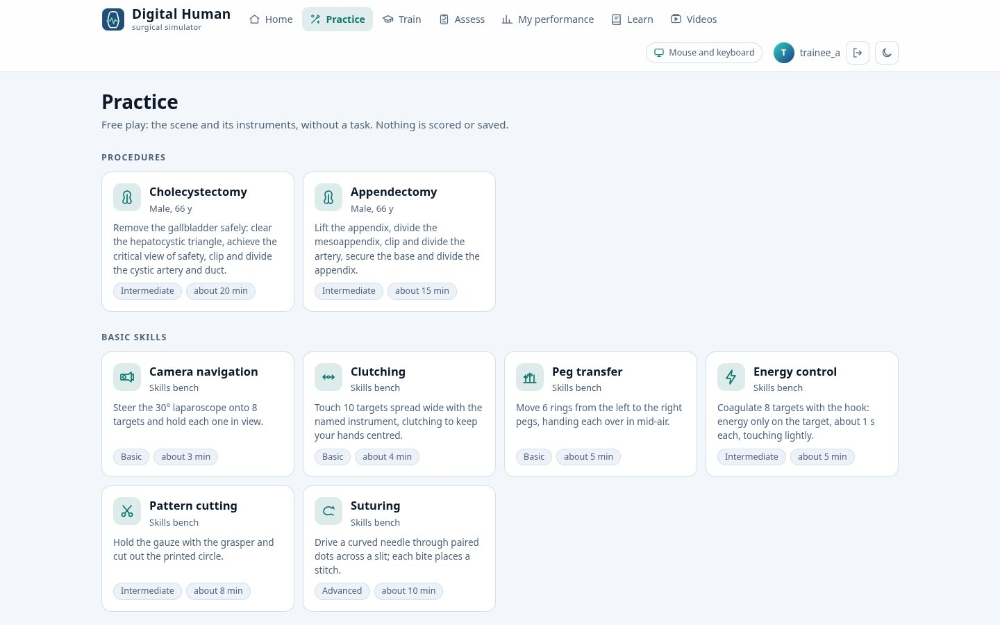
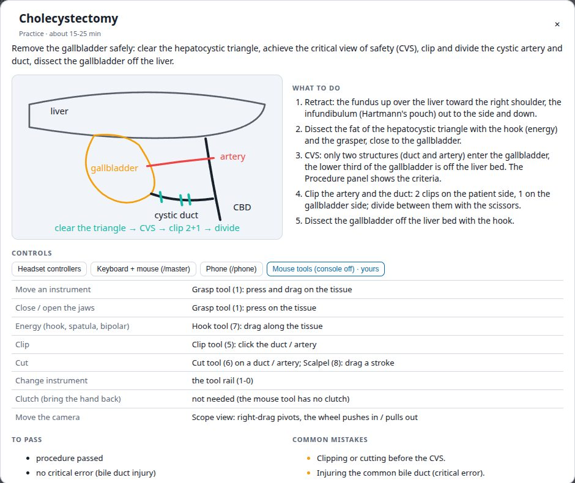
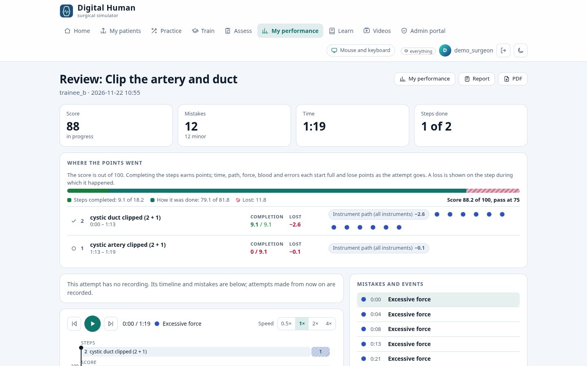
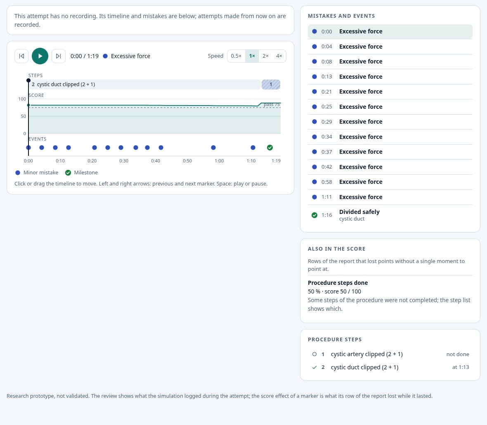
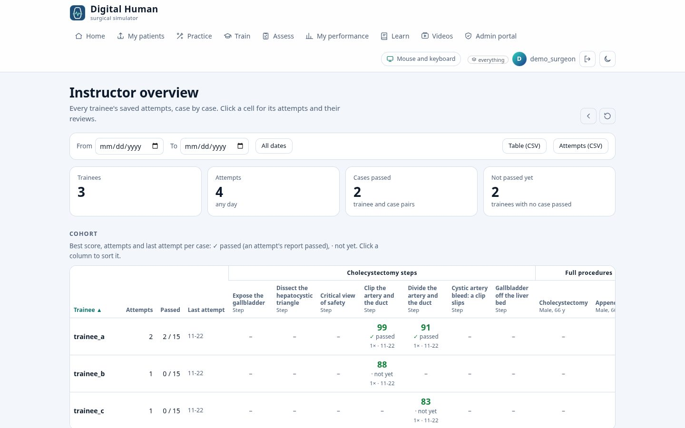
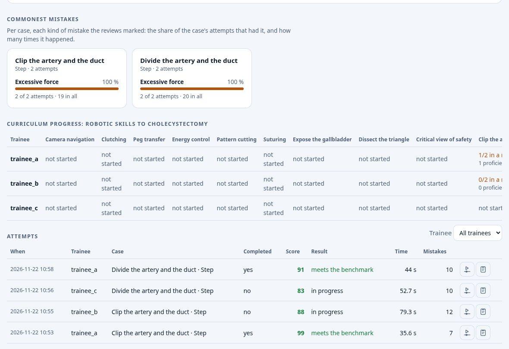

Training and assessment
A curriculum from the basic robotic skills to the full cholecystectomy. Every task is scored from what the physics logs (time, path, force, errors, safety checks), every attempt can be reviewed, and an instructor sees the whole cohort.

Practice, Train, Assess
- Practice: free play in any procedure or skills scene; nothing is scored.
- Train: the curriculum, with guided steps. A module is passed after the required number of proficient attempts in a row (two by default); the next module then unlocks.
- Assess: one scored attempt without guidance, as in an exam; the report and its PDF follow.


The curriculum
| Stage | Tasks |
|---|---|
| Basic skills | Camera navigation with the 30° laparoscope, clutching, peg transfer with hand-over, energy control, pattern cutting, suturing. Each with proficiency criteria: done, time, drops, peak grasp force, misapplied energy. |
| Step cases | Six short scored cases, one per step of the cholecystectomy: expose the gallbladder, dissect the triangle, critical view of safety, clip the artery and duct, divide them, take the gallbladder off its bed. |
| Procedures | The laparoscopic cholecystectomy (four anatomies of Calot's triangle, a double cystic artery, three patients) and the appendectomy, scored. |
The benchmarks are provisional: until enough expert sessions are recorded, the thresholds are the simulator's defaults, not validated proficiency levels.
Step cases and adverse events
Each step case starts from a state the simulator makes with its own operators in the physics process (the fat half cleared, the critical view reached, the clips placed), in under 3 seconds. A case may carry a scripted adverse event: in one, the clips slip off the cystic artery's stump 3 s after its division. A bite pinches the bleeding stump, a clip stops it; the score counts the time to control the bleed, the blood lost and blind clips.
Review of an attempt
A scored attempt lands on its review first: the score, the mistakes by severity, the time and the steps done; the recording with a timeline of the steps, the score as it went and a marker for each mistake. A click anywhere on the timeline moves there; each mistake says what happened, why it matters, how to avoid it and the points it cost.


The instructor's cohort view
For admin accounts: a table of trainees by case (best score, passed, attempts, last date), trends over attempts against the cohort's median, the commonest mistakes per case, a date range, and CSV downloads of the table and of every attempt.

